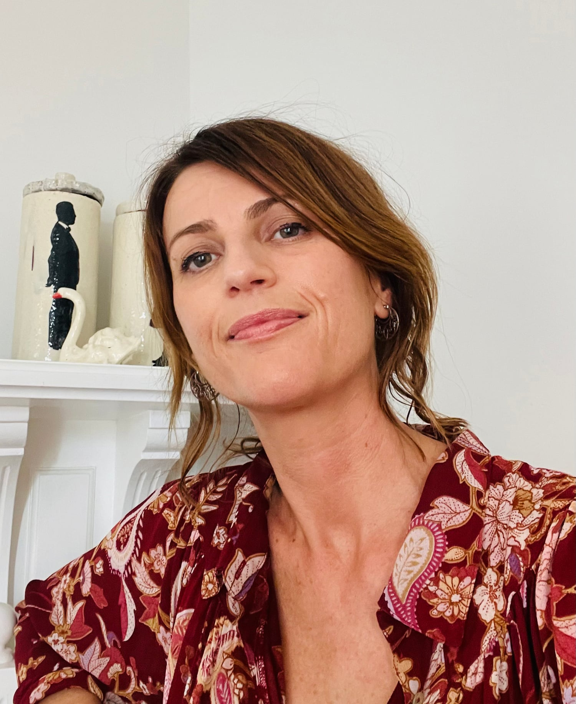

Kia Ora
I am Cat Chapman, a freelance illustrator based in Auckland, Aotearoa New Zealand. I have a Bachelor of Design majoring in Photography, and also studied children's book illustration. I have illustrated books for multiple publishers and Yak and Gnu (Walker Books) and The Best Dad in the World (Upstart Press) are both Storylines Notable Picture Books. Commercially, I have worked on a wide range of small to large corporate projects. Many of these have turned into productive ongoing working relationships. I work with a range of mediums including digital, hand printed and watercolours.
PICTURE BOOKS
Currently I only illustrate books for publishers, and are unable to take on any self published commissions. Please contact my picture book agent Sandra Morris for any further queries.
COMMERCIAL ILLUSTRATION
I enjoy the variety of briefs and style that commercial illustration projects provide. My work is regularly used in fabric prints, editorials, products and packaging, animations and infographics. My work often has a hand drawn aesthetic, that communicates ideas with warmth and character. If you have a job in mind and need a versatile, easy to work with illustrator, please get in touch.